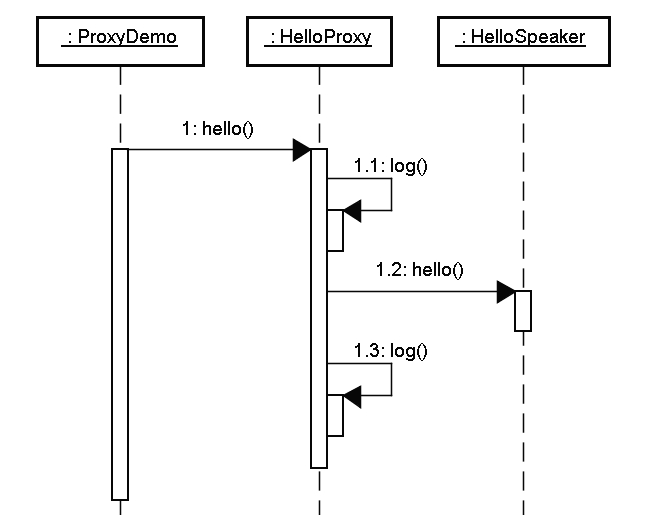

|
暫且先將AOP這個英文縮寫名詞放到一邊，先從一個簡單常見的例子來看一個議題，這個例子當中含有日誌（Logging）動作，程式中很常需要為某些動作或事件作下記錄，以便在事後檢視程式運作過程或是作為除錯時的資訊。 來看一個最簡單的例子，當您需要在執行某些方法時留下日誌訊息，直覺的，您可能會如下撰寫： package onlyfun.caterpillar;
import java.util.logging.*; public class HelloSpeaker { private Logger logger = Logger.getLogger(this.getClass().getName()); public void hello(String name) { // 方法執行開始時留下日誌 logger.log(Level.INFO, "hello method starts...."); // 程式主要功能 System.out.println("Hello, " + name); // 方法執行完畢前留下日誌 logger.log(Level.INFO, "hello method ends...."); } } 在HelloSpeaker類別中，當執行hello()方法時，您希望該方法執行開始與執行完畢時都能留下日誌，最簡單的作法就是如以上的程式設計，在 方法執行的前後加上日誌動作，然而記錄的這幾行程式碼橫切入（Cross-cutting）HelloSpeaker類別中，對於 HelloSpeaker來說，日誌的這幾個動作並不屬於HelloSpeaker商務邏輯（顯示"Hello"等文字），這使得 HelloSpeaker增加了額外的職責。 想想如果程式中這種日誌的動作到處都有需求，以上的寫法勢必造成您必須到處撰寫這些日誌動作的程式碼，這將使得維護日誌程式碼的困難度加大。如果需要的服 務（Service）不只有日誌動作，有一些非物件本身職責的相關動作也混入了物件之中（例如權限檢查、交易管理等等），會使得物件的負擔更形加重，甚至 混淆了物件本身該負有的職責，物件本身的職責所佔的程式碼，或許還小於這些與物件職責不相關的動作或服務的程式碼。 另一方面，使用以上的寫法，若您有一日不再需要日誌（或權限檢查、交易管理等）的服務，那麼您將需要修改所有留下日誌動作的程式碼，您無法簡單的就將這些相關服務從即有的程式中移去。 可以使用代理（Proxy）機制來解決這個問題，在這邊討論兩種代理方式：靜態代理（Static proxy）與動態代理（Dynamic proxy）。 在靜態代理的實現中，代理物件與被代理的物件都必須實現同一個介面，在代理物件中可以實現記錄等相關服務，並在需要的時候再呼叫被代理的物件，如此被代理物件當中就可以僅保留業務相關職責。 舉個實際的例子來說，首先定義一個IHello介面：
package onlyfun.caterpillar; 然後讓實現商務邏輯的HelloSpeaker類別要實現IHello介面，例如：
package onlyfun.caterpillar; 可以看到，在HelloSpeaker類別中現在沒有任何日誌的程式碼插入其中，日誌服務的實現將被放至代理物件之中，代理物件同樣也要實現IHello介面，例如：
package onlyfun.caterpillar; 在HelloProxy類別的hello()方法中，真正實現商務邏輯前後可以安排記錄服務，可以實際撰寫一個測試程式來看看如何使用代理物件。
package onlyfun.caterpillar; 程式中呼叫執行的是代理物件，建構代理物件時必須給它一個被代理物件，記得在操作取回的代理物件時，必須轉換操作介面為IHello介面。 代理物件HelloProxy將代理真正的HelloSpeaker來執行hello()，並在其前後加上日誌的動作，這使得我們的 HelloSpeaker在撰寫時不必介入日誌動作，HelloSpeaker可以專心於它的職責，可以從圖解的方式來更進一步看出代理機制的運作流程。  這是靜態代理的基本範例，然而如您所看到的，代理物件的一個介面只服務於一種類型的物件，而且如果要代理的方法很多，您勢必要為每個方法進行代理，靜態代理在程式規模稍大時就必定無法勝任，在這邊介紹靜態代理的目的，是在讓您了解代理的基本原理。 |